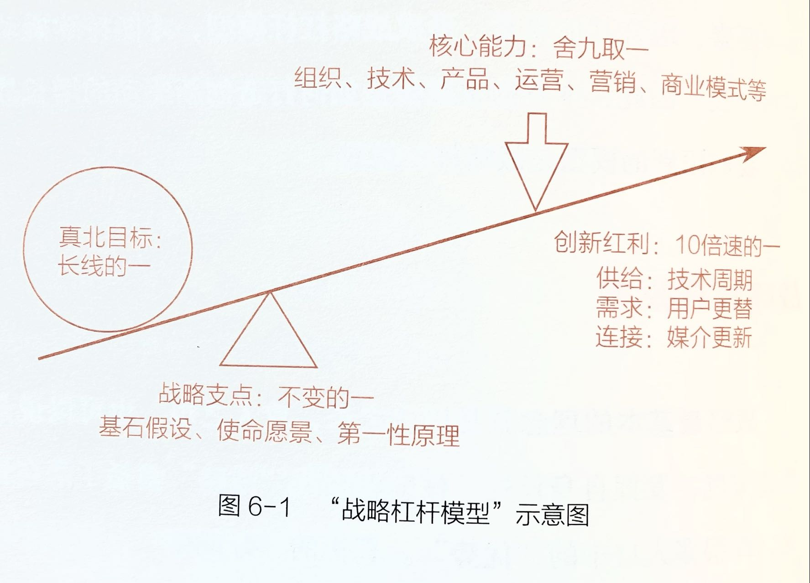
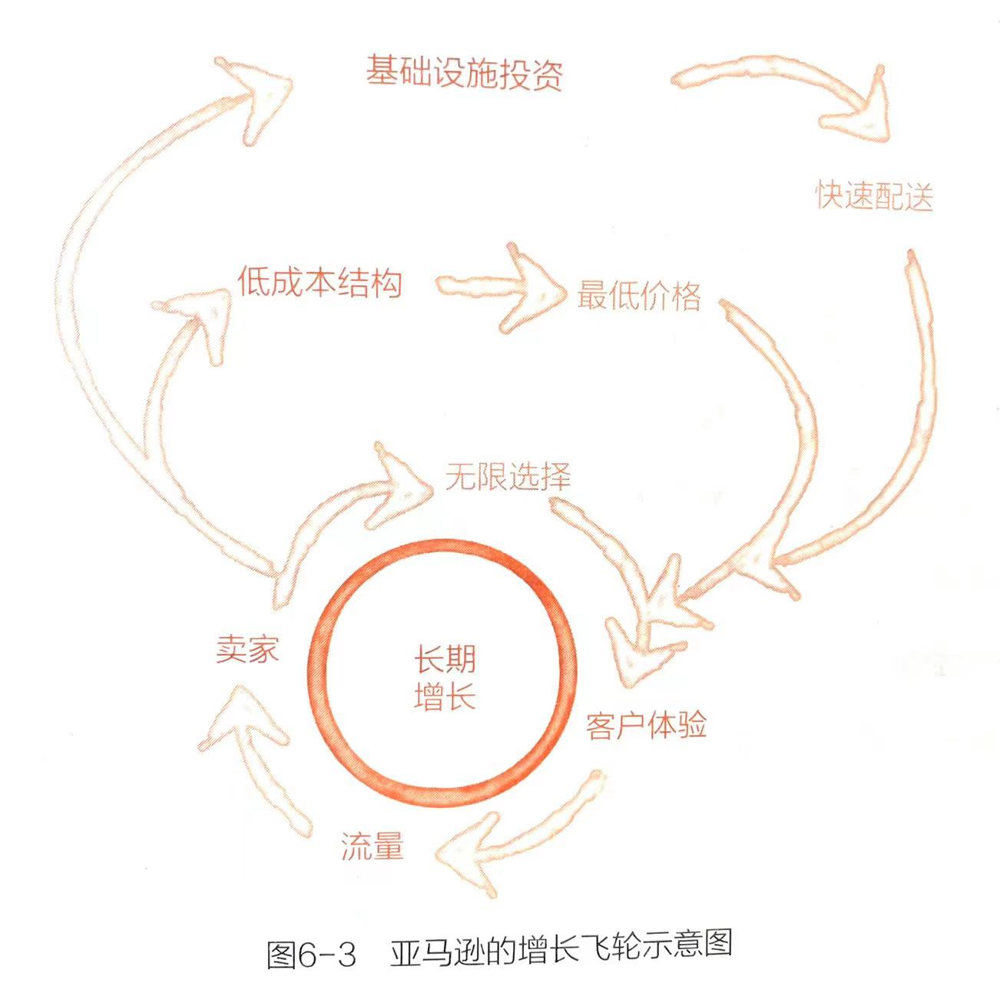

前言 让哲科思维点亮创新者
II 查理·芒格（Charlie Munger）说："想要更好地投资，必须更深刻地理解世界。"但是，我们又该如何深刻地理解世界？答案还是哲科思维。
III 哲学，追问终极；科学，假设验证。过去，我们说哲科思维是无用之大用。言外之意是，你手头上已经没有紧要的事情需要做的时候，学习哲科思维可以帮助你升级。但我现在意识到，这个说法并不准确。我应该斩钉截铁地说："哲科思维是无用之大用，也是每一位创新者必备的思维方式。"
. 过去的商学院教育，大都是从实践和归纳中寻找理论；但我们反其道而行之，以哲科思维为根基，以演绎的方式，先找到万事万物不变的第一性原理，再用理论指导商业实践。
我相信，所有面向未来的创新者，都应该是科学家、哲学家和企业家三者的合体，我同样相信，面向未来的顶尖创新者，一定是兼具科学思维、哲学思维和商业思维的集大成者。
V 这里第一性原理大体可以分为两类：①硬科学，如物理学、生物学、复杂性科学等；②软科学，如哲学、心理学、美学等。当然，我们学习这些学科，不是学习具体的知识，而是要学习这些学科的思维方式，它们提供的是新鲜的思维视角。
战略篇
5 单一要素：找到并击穿"破局点"
识别破局点：单一要素10倍速变化 91 某一单一要素发生了10倍速的变化，就标志着这条曲线即将产生"破局点"。你要做的事，便是选择它作为破局点，并围绕它构建新组合、形成创新产品。
96 在美国学者彼得·考夫曼（Peter Kaufman）编写的《穷查理宝典》一书中，记录了投资大师查理·芒格的诸多投资、学习与人生心得。在书中，芒格提出了著名的"最大化、最小化模型"：跟生态系统相同，专注你的领域越小越好……在商业世界，我们往往会发现，取胜的系统在最大化或者最小化的一个或者几个变量上，走到了近乎荒谬的极端……有时候，最大化或者最小化某个因素，能够使那个单因素拥有与其自身不想称的重要性。
6 战略杠杆：创新驱动的增长战略
1. 真北目标：长线的一 105 所谓真北目标，包括"真"和"北"两个关键词。第一，它必须针对真问题，很多创业者在树立企业目标时就已经出现偏差，他们找到的问题其实并不真实。在这样的目标的指引下，企业投入的人力、物力、精力越多，企业受到的杀伤力就越大。第二，除了针对真问题，真北目标还应该是一个长线目标，是企业长期不变的"指北针"。
按照以上两点确立了真北目标，就能保证目标是真实的，且在较长一段时间内具有有效性。
2. 创新红利：10倍速的一 有了目标，我们再来看看如何实现。在这个模型中，创新可以让杠杆的速度以10倍速迅速延展，比如前文提到的"供需组合法"，在供给、需求和连接三大层面中，都有可能产生巨大的风口或周期性力量，如技术周期、用户更替和媒介更新等，它们都能够提供10倍速的增长杠杆，这就是创新红利。如果没有这种力量的加持，你可能很难撼动真北目标。
3. 战略支点：不变的一 即便找到了合适的杠杆，还必须找到合适的支点，我们把支点命名为战略支点。支点的关键在于牢固，又可被成为"不变"。任何战略都建立在一个"基石假设"之上，正如一幢高大的建筑，如果失去依赖支撑的地基，整栋建筑就会轰然倒塌。
106 4. 核心能力：舍九取一 有了杠杆和支点，想要实现目标，还需要一个重要因素——压在杠杆上的作用力，即战略杠杆模型中的核心能力。当企业集中力量实现较少或者有限的目标时，就会得到更大的收益。之所以需要集中力量，因为企业往往会受到多种因素的制约，同时存在前文提到的"阈值效应"。
企业的核心能力主要来自商业的基本要素，如组织、技术、产品、运营、营销、商业模式等，尽可能在这之中选取单一要素，即通俗意义上的"舍九取一"，将单一要素最大化地压在杠杆的一端，通过杠杆作用，撬动另一端的真北目标。
116 基于客户的这三大期望，亚马逊提出了运营中的用户体验三原则：无限选择、最低价格和快速配送。这三大原则组成了亚马逊的核心运营能力，贝索斯称之为"飞轮效应"或"增长飞轮"。
117 （1）无限选择。它具体是指给客户无限的选择权，让客户随心所欲地购物，不断提升客户体验。客户体验提升了，自然会为亚马逊带来更多的流量，继而吸引更多的卖家入场，为客户提供更齐全的品类选择和优质的服务选择，进一步提升客户体验，形成正向循环的第一层增长飞轮。
（2）最低价格。大部分客户都较为在意商品或服务的性价比，换句话说，在保证质量的前提下，价格越低，客户体验就越好，买家就越多，能吸引到的卖家就越多。有更多的卖家来分摊固定成本，便能有效降低商品或服务的成本，为客户提供最低的价格。这是亚马逊的第二层增长飞轮。
（3）快速配送。快速配送也是同样的道理。物流越快捷、方便，客户的体验越好，就会为网站带来越多的流量和卖家；卖家越多，网站的现金流就越充沛，可用于越多的配送、仓储等基础设施投资，带来更快、更安全的配送服务，进一步提升客户体验。这是亚马逊的第三层增长飞轮。
战略支点：不变的一 125 在知名财经记者李志刚为王兴撰写的个人传记《九败一胜：美团创始人王兴创业十年》中，记录了王兴这样一句话："客户分为消费者和商户两端，两端都很重要，都要服务好。如果两者有冲突，就应该把消费者排在第一位。如果没有消费者，商户是不会用我们的。"
核心能力：舍九取一 127 迈克尔·波特曾在《哈佛商业评论》上发表过一篇文章，名为《什么是战略》，这篇文章深得我心。文中有这样一段关于战略的经典论述："什么是战略？我们发现取舍概念为解答这个问题提供了崭新的视角。战略就是在竞争中做出取舍。战略的本质就是选择不做什么，没有取舍就不需要选择，也就不需要战略。" 1
后记 走如混沌，是为了走出混沌
241 所以，柏拉图说，真正的教育不是把墙上被投射出来的光告诉洞穴里的人，而是把洞穴里的人带到洞穴之外，让他自己沐浴在真理的阳光之下。
- https://hbr.org/1996/11/what-is-strategy ↩